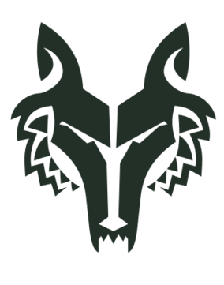

Written by S5C2H — Alliance Leader
The guild Nordic Kingdom was founded at the time when guilds were added to the game in 2016. The founder retired almost immediately and Pormestarix took the lead. He founded the NoK Discord server in February of 2017 — mostly a small social gathering place for a handful of people in the guild. I joined the server few months later when I joined the guild as well, and the officer pool a while after that. We had a great bunch of people and had lots of fun.
Pretty soon there were talks about expanding so that there would be a place for alts and people that needed a less active environment. NoK Kinderkarten was founded on 7.8.2018. The typo in the name was purely accidental — the guild was made before checking it, but it stuck and has been like that ever since. The first leader of KK was Tofi, son of the then NoK Main GL Pormestarix.
I took a really active role in the guild pretty soon after joining the officer side. We had a team that was really active for years and everyone had their roles in the making of the alliance. We started thinking about a larger expansion towards the end of 2018. We founded the Suomi SWGOH server on 2.12.2018, where we wanted to gather Finnish guilds to talk about the game in general and about possible closer alliances.
Talks started with a few guilds but we couldn't find an agreement that suited all parties. We wanted to start a real alliance and brainstormed within the NoK officers what it should look like and what kind of leadership philosophy we wanted. The whole idea of the coming NoK alliance was based on it being as player-friendly as possible. We wanted guilds of different size and activity so that when players needed to be let go, they could find a guild that suited their changing activity needs but still remain within the same social circle. A lot of people hated alliances back then because they were mostly rigidly outside-led. We wanted to try something different — guilds with full autonomy on their own things, helping each other on a voluntary basis.
There were a few of us who did the work of contacting different Finnish guilds and sold this idea of a new type of alliance, not ruled with an iron fist. It took a lot of effort to convince people of our intentions, but people listened. RoR and KS were the first to join (the latter left some years later). I built the structure we still use today. Cross-alliance roles were established: I was the Administrative Officer, DrSiwakov was the Liaisons Officer, and Nahkaseiväs — an integral part of the alliance's creation — had a role as well.
Pretty soon we expanded regionally and took in a Swedish guild renamed NoK LS. Other guilds joined over time and some were made to accommodate specific needs. Valhalla was originally made to be a retiree guild. Ascension was made to be the starter guild for new players. Behind every change was the idea of NoK being the player-friendly alliance with options for different rosters and activity needs.
From the beginning, one of the things we wanted was the chance of free mobility — something to aspire to for players wanting to improve, something to fall back on for those wanting to slow down. That principle was called the Free Movement Policy. All guilds agreed that their players could request a transfer to another guild if their needs changed, and no guild would put social pressure on them. Whether the application went through was the decision of the receiving guild.
This principle was the fuel for all our innovations. The best example was when a KK officer was taken into the Main as an officer due to his enthusiasm. Captain Salsafingers was the main worker on the Counterlist project that brought us the most international fame we have ever had. The first counterlist was published in August of 2019 and was a huge success — it was easy to use and all counters were personally tested and accepted within NoK Main. Over time the work group expanded and we had several updated versions. This was before GG's GAC counters even existed.
I had taken over as Guild Leader of NoK Main on 22.7.2019, a few months before we blew up with the counterlist. There had been some confusion about the structure of the alliance, so we made the alliance-wide roles clearer. I took the Alliance Leader role, Nahkaseiväs became Vice Lead, DrSiwakov held the Liaisons Officer role, and we had an Alliance Head Recruiter as well.
There has been a lot of people coming and going and a lot of changes over the years. Alliance leadership has evolved over time — I am still here as the AL. Lego Mhann Uhdea is the Vice Lead. Grand Master Beider is the Liaisons Officer after DrSiwakov retired.
There are a lot of people who have been and are important to this place that I should mention. But I would probably forget so many, so don't take it personally. You are all very appreciated and missed. The times are a-changing — but we are still here after ten years.
Written by Huno
Nordic Kingdom Kinderkarten started in 2017 as the second guild within the Nordic Kingdom alliance behind Nordic Kingdom Main. Due to increasing demand and a lack of opening in Nordic Kingdom Main, the leadership at the time, PormistariX and his son, Tofi, decided to start Kinderkarten.
Tofi was the first leader and held the guild for about a year or so in which it mainly housed alternate accounts of Nordic Kingdom players and small accounts serving the role of NoK Ascension at that time. After Tofi there was a revolving door of leadership which has not been tracked.
DrSiwakov eventually took the reins and was one of the longest running leaders of Kinderkarten, going from ~2019 until 11/6/2021. Siwa brought stability to the guild and his experience approach built an officer core which has still descended through to the current 2026 guild.
After Siwa in 11/6/2021, Yoda took the reins and held leadership for nearly a year. During this period, I joined the officer group among others such as Balmolok, and Zarn who brought our current leader, Wali, to the guild. Under Yoda, and Siwa as Admin there experience and the long duration of Kinderkarten leadership created the backbone of the culture which remains to this day. It was also within this period Kinderkarten held its notable 36 win TW streak.
Yoda also instituted a Vice Leader for a brief period in 2022, Balmolok who was joint with Yoda in pushing Kinderkarten into a more active setting out of being an active beginner guild.
DrSiwakov's Return
Yoda handed the leadership back to Siwa on 9/4/2022 as he had decided to move onward in the alliance to Nordic Kingdom Lightsabers and Main.
Siwa did not want to remain leader from the get go and spent a few months working with me to prepare a transition once again which came on 6/12/2022. Siwa kept his 4th account in Kinderkarten and worked with me for most of my duration as leader.
Huno's Leadership
Nordic Kingdom Raiders of Rohan
Nordic Kingdom Raiders of Rohan⚔ No tales have been recorded for Raiders of Rohan yet — but the chronicles are being written. Check back soon. ⚔
Nordic Kingdom Trayus Core
Nordic Kingdom Trayus CoreWritten by GrandMasterBeider
The Finnish based guild Rennoille pelaajille (for casual players) was formed in late 2016 by Darth Traya. As its name would suggest, staying highly casual in the early years meant progression was slow and completing the original Rancor pit raid took a while.
Most of the players were curious to find out who was hiding behind each username and thus it was decided in August of 2017 that the guild would have its own Facebook page for just that... and memes.
When the Sith Triumvirate raid launched in the spring of 2018, Rennoille pelaajille started to go into panic mode: new players had stopped appearing and many still present sought out guilds with better success on the new shiny raid.
The story of Rennoille pelaajille almost came to an end until a player by the name of Jorma Persiäs had an idea he hesitantly suggested to the leadership: he would start searching for another struggling, predominantly Finnish guild. Slowly but surely this led to a successful 29+21 merger — and with this, Rennoille pelaajille was no more, instead opting for a new moniker to symbolise the change. The era of TRAYUS CORE had begun.
It took a while, but the reinvigorated guild finally managed to clear the Heroic Sith raid in May of 2019. It was around this time that Trayus Core started to hesitantly veer off from the idea of being 100% Finnish as it was becoming increasingly harder to acquire a steady flow of players from a small Nordic country.
Jorma Persiäs, now known more commonly as JMB or JediMasterBeider, took it upon himself to find players from around the world, getting most new players from the game's biggest player base, the States. The biggest hurdles were adjusting raid times to fit all — nearly impossible, but somehow manageable.
The community aspect of the game became more prominent because of the international players that suddenly housed Trayus Core, and opened the idea of seeking some companionship from a SWGOH alliance.
JMB wormed his way to the Nordic Kingdom alliance server around May of 2020 — against the wishes of Trayus Core's leadership. Key figures from the guild were certain the guild would lose its identity and be micromanaged out of existence, but after the alliance leader had a fruitful discussion with Darth Traya, it was agreed that Trayus Core would become the 7th guild of the alliance within the same month.
After joining the alliance, Trayus Core has had 2 changes in leadership: Phelan Kell took over when Darth Traya's motivation plummeted. Phelan was a fair, active leader but felt unchallenged and left soon after.
Marri Harkus took the role of guild leader after Phelan's exit with a promise to Darth Traya never to remove her despite activity level — which still stands true to this day.
Another big crisis was averted back in April of 2025 after Trayus Core had begun to spin out of control, haemorrhaging players and seeing a decline in motivation. Alliance officers had heated discussions about the future of Trayus Core and tried to merge Nordic Kingdom Lightsabers with Nordic Kingdom Trayus Core unsuccessfully. The strong resistance from Trayus Core leadership nearly ended the shared journey with the alliance...
But did not. And today we stand tall, strong and happily in the presence of the rest of NoK. Kippis! 🥂
Massive thanks to our previous officers such as Rusina, Darthseagull, Revan, Epe, Mad Ben Syke, SirHopper, Mtl Eliza, Gunark, Varesa, Yedi2oioi966, Rushbin, Jaeko Grogu — not to forget our current ones artoo, Jth1, Krefto, Jepes & Cypher. 💜

Nordic Kingdom Susilauma
Nordic Kingdom SusilaumaWritten by Vynar
Susilauma was founded by Maltan Hiram around 2016. Originally a Finnish guild, small and simple. For years we kept going as a casual, carefree guild. We joined NoK in May 2021.
Our leader went AWOL and in March 2023, Enclave took over. He made it a requirement to join Discord, or be removed. Many left, but the rest of us kept going.
June 2023, a new leader would arise, with 2 potential choices — Hax and me. We talked, and came to agreement that I'd take the reins. We had 43 members, 170M GP. Got a lot of help from other NoK members (Siwa, Huno etc.)
Now, almost 3 years later, we stand at around 585M GP. Proud to be members of the Nordic Kingdom Alliance.
At some point, Wali did something, maybe important 🤔
Nordic Kingdom Lightsabers
Nordic Kingdom LightsabersThe guild was formed as "Anakins Order" by Rof Qel Bat after the leader in an old guild called "Knugen min" never came online. This was early 2017.
A partnership with a guild called Swedish Force began in early 2018. It was a bit of a one-sided thing — many people looked at Lightsabers as a sinking ship. Rof Qel Bat left the lead to Polarbeard, who then made Lippakassler an officer in June. The most active members got an offer to join Swedish Force, but some chose to stay. Eventually in July, Polarbeard joined them and the guild received a new leader in return: Reikan.
Reikan didn't have enough time to lead, so he passed the torch to Lippakassler on the 23rd of October 2018. Lippakassler didn't mind the lower activity at first, but after failing to field enough players for Territory War (25) a couple of times, a recruitment and merger ad was posted on the official forums. The guild also changed its name from Anakins Order to Swedish Northern Lightsabers to attract more Swedes.
On the 7th of May 2019, Nahkaseiväs reached out, suggesting a merger with their smaller guild, Kinderkarten. Only NoK main and KK existed on this Discord server at the time. It took a couple of days to warm up to the idea, but thanks to S5C2H, NoK Grand Master Sand, Captain Salsafingers, and especially DrSiwakov, it was an easy decision in the end. Lightsabers joined Nordic Kingdom on the 9th of May 2019.
Help from Siwa and KK came immediately, giving LS enough players for Territory Wars. All in all, Lightsabers only missed 2 or 3 TW since November 2017. The two guilds never merged — both Lightsabers and Kinderkarten are still very much alive. Life in the alliance was great, with strong cooperation especially in Territory Battles. When NoK main were short on people, LS sent help, and KK sent replacements in return.
A year and a half later, Lippakassler felt the guild was in a good place and handed leadership to Obi1 Kenobi0 in October 2020. Just under a year later in July 2021, Lippakassler came back to help — which eventually led to facilitating a player swap between Korpisoturit and Lightsabers, bringing fresh energy to LS. In September 2021, Lego Mhann Uhdea and Reaper took over as joint leaders, supported by a strong group of officers.
Guild Leaders
- ⚔ Rof Qel Bat — guild creation as Anakins Order, early 2017
- ⚔ Polarbeard — May 2018
- ⚔ Reikan — 22 July 2018
- ⚔ Lippakassler — 23 October 2018 — Swedish Northern Lightsabers, then Nordic Kingdom Lightsabers on 9 May 2019
- ⚔ Obi1 Kenobi0 — 20 October 2020
- ⚔ Kheiron — 18 March 2021
- ⚔ Lippakassler — 9 July 2021
- ⚔ Lego Mhann Uhdea & Reaper — 5 September 2021 — joint leadership
- ⚔ Lego Mhann Uhdea — 18 September 2022 — solo leadership
- ⚔ LaskiRapyla — 2 October 2022
- ⚔ Heisen Berg — 18 December 2022
- ⚔ LaskiRapyla — 10 May 2023
- ⚔ BeetleJuice — 22 June 2023
- ⚔ Big_Poppa_Pump — 7 August 2023
- ⚔ SuperJedi — 5 February 2024
- ⚔ Dengar — 11 February 2024
- ⚔ Shade — 16 September 2024
- ⚔ Kheiron — 6 October 2024
- ⚔ GrandMasterBeider — 5 October 2025
- ⚔ Scan Pinquo — 9 October 2025
Honourable mentions to some of the great officers I had with me over the years in LS that never appeared on the leaders list or otherwise in this message — Loordi Ilmari, Yedi 2oioi966, Frolos, Neshov, Veijari, Jinn, Ninjakay, Chironex, Chesmal, Sune.
Nordic Kingdom Wanhusten Kilta
Nordic Kingdom Wanhusten Kilta⚔ No tales have been recorded for Wanhusten Kilta yet — but the chronicles are being written. Check back soon. ⚔
Nordic Kingdom FilthyJawas
Nordic Kingdom FilthyJawas⚔ No tales have been recorded for FilthyJawas yet — but the chronicles are being written. Check back soon. ⚔
Nordic Kingdom Valhalla
Nordic Kingdom ValhallaA group of Americans mainly led by Smash, Acehole, 2w2ez, and Gellpay wanted a more relaxed environment after previous guilds had been too pressuring for them. They wanted a place where they could come online, do guild stuff, but not worry about being super competitive and have guild farms and such.
On the 24th of August 2019, they officially joined the Nordic Kingdom family. A NoK officer called Ninjakay came up with the name Nordic Kingdom Valhalla, because of that attitude of being more of a retirement home — a step back from the high intensity of the big guilds.
That starting group of officers are long gone from the Alliance and/or the game, but we managed to get a hold of 2w2ez, who told us about some of the stuff above. Valhalla has gone up and down in activity through the years, but it remains an important part of the family.
Nordic Kingdom Ascension
Nordic Kingdom AscensionWritten by Ob1 Kenobi0 & Lippakassler
This is how Ascension started. We thought that we needed a new Starter guild in the Alliance, and Nordic Kingdom Ascension was born.
There were quite a few people involved in the mystic beginnings of Asc. I (Obi1Kenobi0 as Jack Bauer) had the honour of being the first leader. DrSiwakov actually created the guild, and then handed it to me. Other original officers were Darth Traya, DrSiwakov, Kheiron, JediMasterBeider and Läskiräpylä.
We started a heavy recruiting campaign to fill our brand new guild with Master Beider. We looked far and near, scattered all Facebook, Reddit and Discord recruiting sites with ads, and joined hundreds of small guilds for recruiting purposes. We eventually managed to get Ascension up and running.
We had the good fortune of getting help from the big boys around the Alliance's top guilds — NoK, RoR, KS, TC — to complete Heroic raids at the time. We had loads of fun organising raid extravaganzas. On one occasion we did 4 raids in less than 2 days (between TWs).
After we got the guild up and running, I got some other opportunities, and decided to leave the guild in December.
In January of 2023, LaskiRapyla and I joined in on DrSiwakov's effort to make Ascension reach its full potential. It should be a springboard for new players to learn about the game, improve their accounts with the help of bigger guildmates, and eventually move on up in the alliance. And everyone should have fun!
A lot of recruiting was done by DrSiwakov, especially early on, but it never stopped. We added more structure to guild events such as TB and TW. Switched to newest raids when we thought it was possible to get rewards — started with Hoth TB but pretty quickly did Geonosis, then RotE when we became big enough.
All was well. We had gotten some familiar faces such as Obi1 Kenobi0 and Loordi Ilmari to join us as officers. Made some new fantastic discoveries in Nargor and Ursus.
Three years later, 15th of January 2026, my dear friend DrSiwakov decided that it was time for him to swim with the birds. Because obviously nobody can fly with them without some kind of machine or contraption, so swimming with them is the only option. Duh. And it would make it sound like he's dead. Or I could have said swimming with the fishes, but I swear I didn't have him murdered to take his place! At this point you might sigh and ask "What in Mr Bean's bright green MINI Cooper are you talking about?!" He retired his four SWGoH accounts, simple enough? Jeez, I'm just trying to make it special, excuse me!
Sorry, got sidetracked.
All good things will come to an end; but that doesn't mean that the next beginning isn't just as good.
Ursus and I did our very best to keep the guild running just as well as before. TW turned out to be more difficult without those huge accounts with all Galactic Legends, but somehow we kept winning. Last loss for Ascension was in December of 2023.
In what felt like no time, we added five more officers to make it seven — Gonnhir, Lordisame, Oliviyaya, Killian, and Toland. They all have their specialities and are all around good people, a real pleasure to work with.
And that's where we are at the time of me writing this. See you in the future!